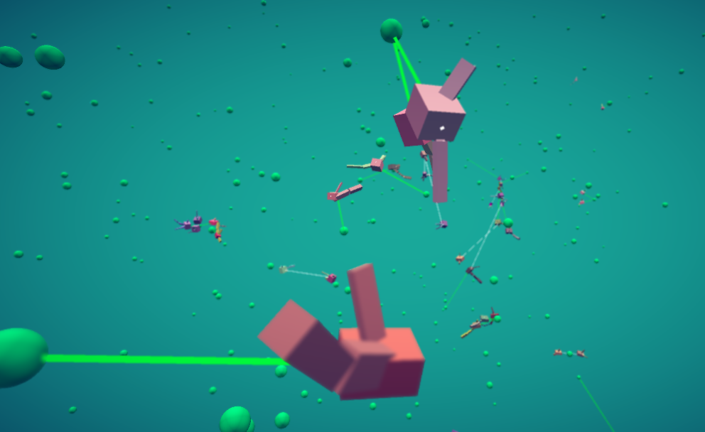
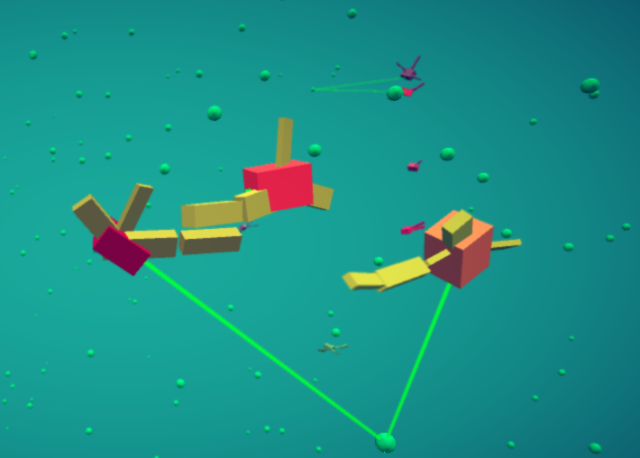
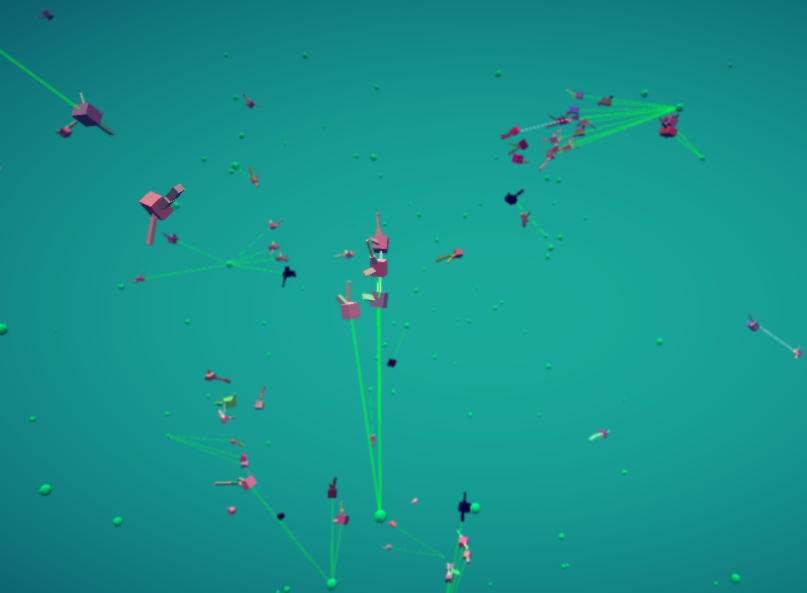
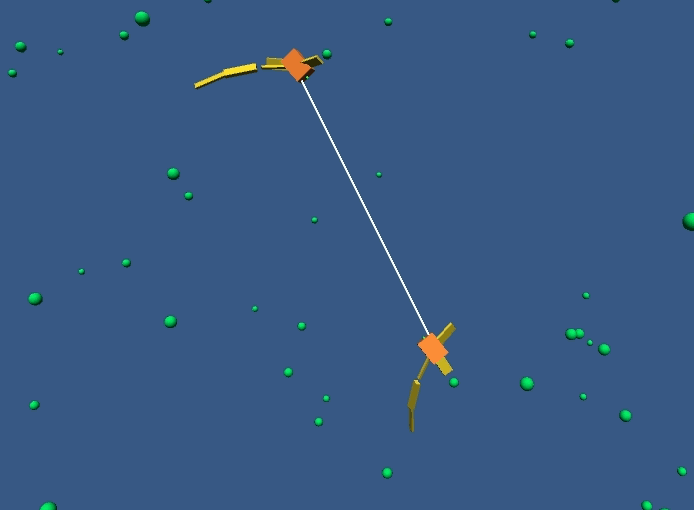
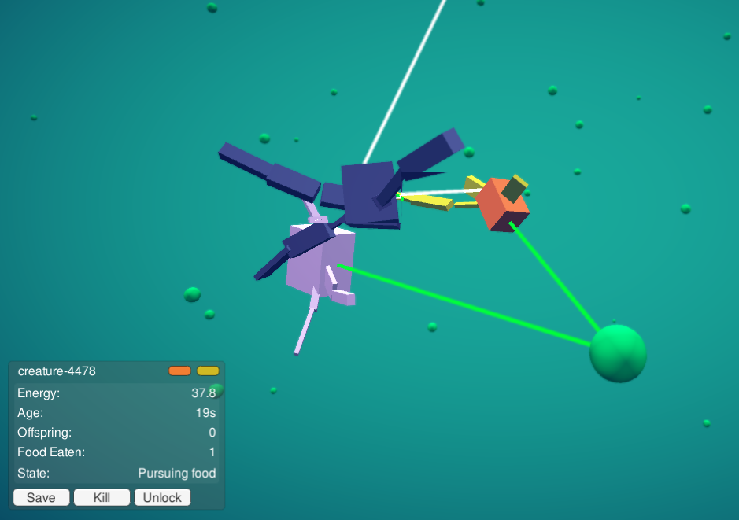

Artificial life prototype
Evosim
A three-dimensional, real time simulation of natural selection. Creatures made of jointed physics blocks know nothing but eating and mating. Over generations they get better at moving around, finding food and finding mates. Or they die out.
Download on itch.io View source on GitHub

Overview
Evosim is a proof of concept. It set out to find how well an ordinary consumer PC could simulate a 3D artificial gene pool, where every creature is built from several rigid bodies connected by joints and every one of them is simulated by the physics engine at once.
It is meant as a toy, not a scientific tool. Nothing about the creatures is designed: the first generation is random, and everything after that comes from who managed to eat and who managed to mate.
Inspiration
The project was first inspired by Karl Sims' Evolving Virtual Creatures (1994), in which creatures built from jointed blocks evolved to swim, walk and compete, and by Jeffrey Ventrella's Swimbots, a world of swimming creatures that look for food and choose their own mates. The other spark was noticing that this is what many people expected Spore (2008) to be: a world where creatures really evolve, rather than being designed by the player.
What a creature does
- Eat When its energy drops below its hunger threshold, it looks for the nearest foodbit and swims towards it.
- Mate When it is fed and old enough, it looks for a partner, preferring one of a similar colour.
- Pass on genes A mating pair gives a third of each parent's energy to one child, whose genes are a mix of both, with random mutations.
- Die Being alive costs energy every second. A creature that runs out slows, darkens and dies.
- Engine
- Unity, scripts in C#
- Physics
- Rigid bodies joined by configurable joints, driven by a sine wave
- Platforms
- Windows, Linux
- Settings
- One JSON file, no rebuild needed
- Started
- 2011
- Inspired by
- Karl Sims' Evolving Virtual Creatures, Jeffrey Ventrella's Swimbots
- Licence
- CC BY-NC-SA 4.0
The world and its energy
The simulation is a closed system. A fixed amount of energy, 5,000 units by default, is put in at the start and never created or destroyed. Energy that isn't in a creature or a foodbit sits in a pool called the ether. The ether limits how big the population can grow: more creatures means less energy left for food.
Foodbits sprout from other foodbits, a short distance from a random parent, so food spreads in patches across the world. Creatures that can reach a patch and stay near it do well, and the patches thin out as they are grazed.
Creatures
Every creature is built at runtime from its chromosome. The body is a coloured box, the root, with up to four branches of limbs attached to it. Each branch is a chain of up to three box-shaped segments, joined to the root and to each other with physics joints.
How they move
Each creature has a sine wave set by three genes: frequency, amplitude and phase. The wave drives every joint, so the limbs flap together in rhythm. On each upswing the creature is pushed forwards and turns towards its target; it is pushed harder the more branches it has. Drag on the root and limbs makes the world feel like water, and a body that flails in the wrong direction gets nowhere.
A creature whose energy falls below 5 units slows down and fades to black. Food brings its colour and speed back. If its energy reaches zero, it dies and its remaining energy returns to the ether.


Behaviour
Creatures run a small state machine, updated ten times a second. The eye refreshes four times a second and picks a target to suit the current state: the nearest foodbit when hungry, or the most similarly coloured creature in sight when looking for a mate.
| State | Entered when |
|---|---|
| Searching for food | Energy below the hunger threshold and no foodbit in sight |
| Pursuing food | Hungry and a foodbit is in sight |
| Searching for mate | Fed, at least 6 seconds old, and no partner in sight |
| Pursuing mate | Fed, mature and a partner is in sight |
| Mating | A pursuing creature comes within 1 unit of its partner |
| Dead | Energy reaches zero, from any state |
The hunger threshold is itself a gene. A creature with a low threshold spends more of its life looking for mates; one with a high threshold keeps eating. Which works better depends on how much food is around, and the population drifts accordingly.

Genetics
A chromosome holds everything needed to build and run a creature. The first generation, 20 creatures by default, gets random genes within limits set in the settings file. After that every new creature comes from two parents through crossover and then mutation.
| Gene | First generation | Crossover | Mutation |
|---|---|---|---|
| Body colour | Random RGB | Average of both parents | Yes |
| Limb colour | Same as body colour | Average of both parents | Yes |
| Root scale | Random, 0.3 to 1.0 on each axis | From one parent | Only for roots over 1 unit on every axis |
| Limb structure | 1 to 4 branches of 1 to 3 segments | From one parent | No |
| Segment size and position | Random within limits | Each axis may be swapped for a random segment's from the other parent | Size only |
| Joint wave: frequency, amplitude, phase | Random | Each from either parent | Yes |
| Hunger threshold | 50 units | From either parent | Yes |
With the default settings, each value has a 50% chance of being crossed over and a 10% chance of mutating, by a random amount up to ±0.3. Because colour is averaged, and mates are chosen by colour, related creatures tend to look alike and lineages show up as colour groups across the world.
Playing with it
Evosim is something to watch rather than play. Fly the camera around, click on creatures to follow them, save the ones you like, and kill the ones you don't like.
Controls
- Right drag
- Move forwards and back, and turn
- Left and right drag
- Turn and look up or down
- Middle drag
- Pan
- Left click
- Select a creature
- F1
- Show or hide simulation info
- F2
- Show or hide the tools panel
- Esc
- Quit
Inspecting creatures
Selecting a creature opens a panel with its energy, age, number of offspring, food eaten
and current state. From there you can save it, kill it, or unlock the camera from it.
Saved creatures are written as JSON to data/saved_creatures and can be imported
back into a later run, so a creature that evolved well can be dropped into a fresh world.
There's already one in there that I saved called "Seahorse" because I thought it looked and behaved a bit like a seahorse.

Settings
Every number in the simulation lives in evosim_Data/settings.json: total
energy, starting population, food growth, metabolism, line of sight, body size limits,
and the crossover and mutation rates. Non-integer values must be written with a decimal
point, such as 3.0, and nothing is validated. Population and foodbit counts
can be logged to CSV for graphing afterwards.
"ether": {
"total_energy" : 5000.0,
"start_number_foodbits" : 200,
"starting_creatures" : 20
},
"genetics": {
"crossover_rate" : 0.5,
"mutation_rate" : 0.1,
"mutation_factor" : 0.3
}
On a laptop or an older machine, lower total_energy. It puts a soft limit on
how many creatures can be alive at once, and so on how many rigid bodies the physics engine
has to handle. The default suits a 5th generation Core i5 or equivalent.
Building from source
Clone the repository and check out develop, since master is out of
date. Open the folder as an existing project in Unity, open the scene named
Main, and make sure the Main script is attached to the Main
GameObject.
git clone https://github.com/clomax/evosim-prototype.git
cd evosim-prototype
git checkout developLimitations
This is a prototype, and some of the shortcuts it takes are worth knowing about:
- Movement is helped along. The root is pushed forwards in time with the joint wave, so limbs shape how a creature moves rather than doing all the work. The intention is to gradually introduce complexity.
- The number of limbs and segments is fixed by the first generation; crossover picks one parent's layout and mutation never adds or removes a segment.
- Root size almost never mutates, because the mutation only applies to roots larger than any first-generation creature.
- The behaviour is a hand-written state machine, not something that evolves.
- Performance is bounded by the physics engine. Large populations slow down quickly on modest hardware.
Ideas for further work
Plans and ideas are tracked on the project's Trello board.
Bodies and movement
- Limbs that evolve: mutation that adds or removes segments and whole branches, and crossover that mixes branches from both parents, along with their shape, segments, colour and position. This is in progress.
- A complete rebuild of how limbs work, drawing on Karl Sims' paper and Graph Craft.
- Movement of limbs to determine propulsion rather than cheating it for effect, as Karl Sims' swimming creatures did.
- An option to enforce symmetry in body shape.
- Newborn creatures that grow slowly to full size.
Brains and behaviour
- Neural network brains. Inputs would be the target's position, the creature's own position, its energy and how the distance to its goal is changing; outputs would set the joint amplitudes, frequencies and phases and the direction to face. Feedforward, recurrent, LSTM and NEAT or HyperNEAT networks are all candidates.
- Sexual selection, and sexual dimorphism, with two sexes that can look different.
- Carnivores, with creatures that can eat each other. This is more than a switch to flip, since it changes the whole energy balance.
- Bioluminescence, perhaps as a way for creatures to signal to each other. Polyworld gave its creatures lights without knowing what they would use them for.
- Groups of creatures at the start, each group identical or only slightly mutated, rather than all random.
Watching and experimenting
- A settings panel inside the simulation for every value in the settings file, plus time scaling and a pause menu.
- Saving and loading a whole gene pool, not just single creatures.
- Statistics for the current gene pool, with live graphs of population and gene values.
- A database behind it all: a time series of creature and foodbit numbers, together with settings, saved creatures, saved gene pools and a Clade diagram of genetic history.
- Creature tracking: a list of creatures you're interested in, camera modes for following them, and a clear marker on the selected one.
- Generated names for creatures, made of a genus name and a given name.
- A creature editor that changes the genes as you edit the body, with import and export, and silhouettes of saved creatures.
- Telling two chosen creatures to mate with each other.
- A prettier environment.
Performance
- A lookup table for the joint sine wave instead of calculating it every physics step.
- Spreading the total energy check over several frames or threads.